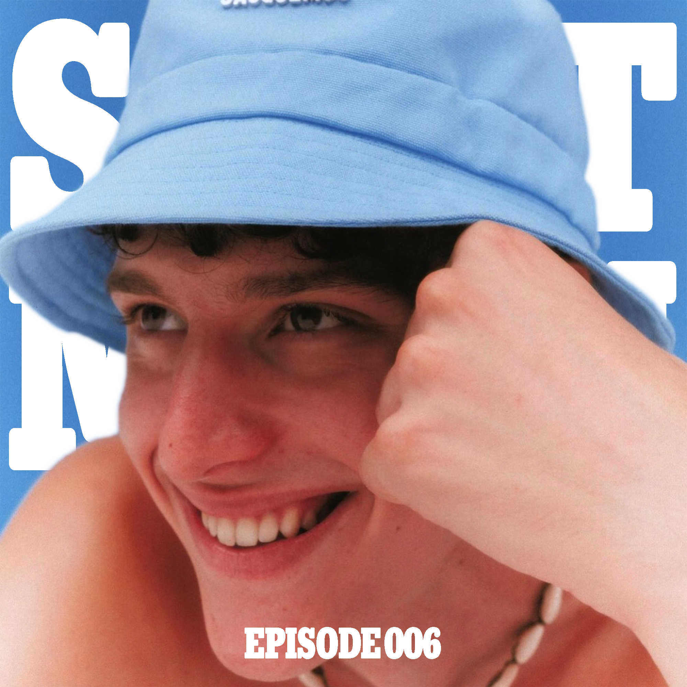

Episode 006 /// Saint Manu Radio
Sept. 2022
Another favorite. The first move away from home — to Miami, with a cat, after losing on-campus housing and scrambling for two weeks. The playlist of true independence. A new era opening up after grief, heartbreak, and so much uncertainty. This one sounds like breathing out for the first time.
Cover: Lyudmil Dimitrov shot by Max Jorquera for Fucking Young! Online Magazine